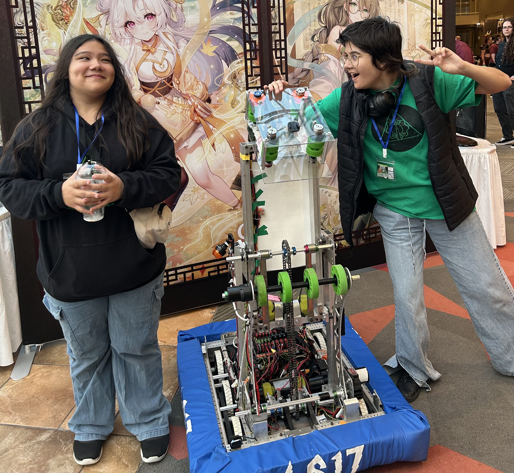
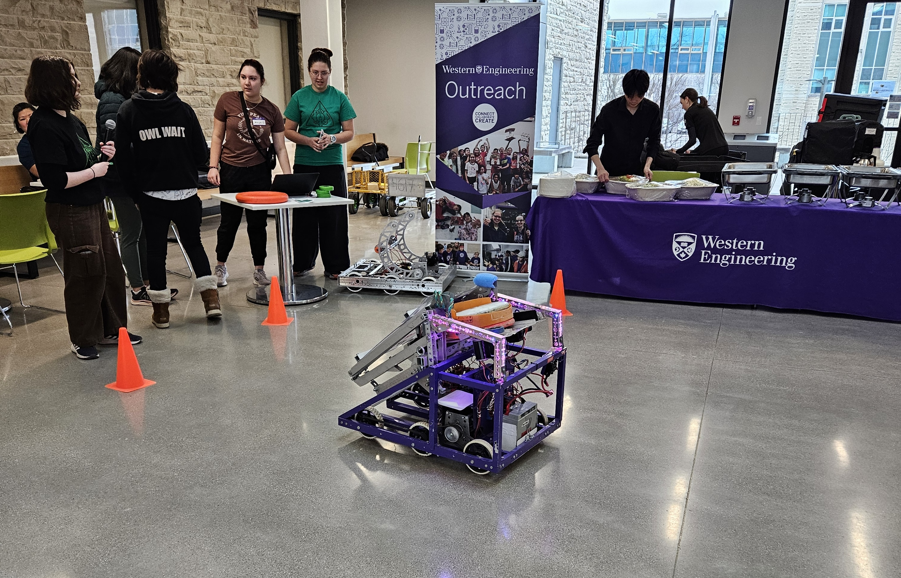
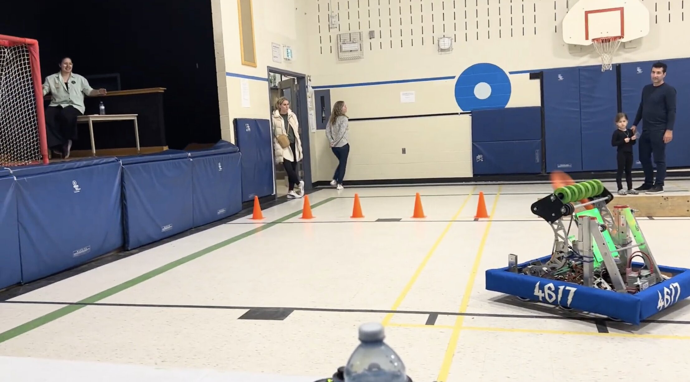
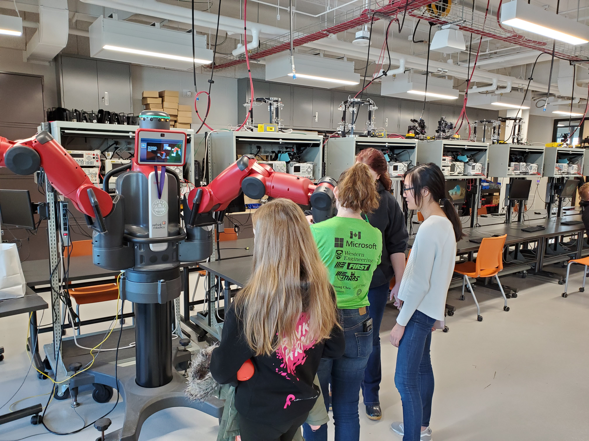

Forest City Comicon
DAUN loves to attend the London Forest City Comicon with demonstrations of our robot!
We interact with people of all ages, from young students who are just being exposed to robotics to
to interested high schoolers. Not only do we show the robot off and provide information about our
team, but we also let everyone try their hand at controlling it! Attending the Forest City Comicon
is a spendid way for DAUN to demonstrate the hard work we put into our robots every year!

Christmas Tree Unloading
4617 volunteers regularly at a church to help unload Christmas trees in time to sell them for Christmas
time! There's no better feeling than aiding your local community for an event that helps out many people
during a holiday.

GO Code Girl
We love to demonstrate our robot at Western University's GO Code Girl's events! Female teenagers from
all over London are able to control the robot that we spend planning and building every year. We provide
information about our team to interested individuals, and show off all of its features and capabilities.

Elementary School STEM Night
DAUN showed off our robot yet again at a STEM night for an elementary school! We let elementary students
of all ages control our robot, and this time, we created a game! Not only did participants drive the robot
around obstacles, but they also got to shoot game pieces into a net using the features of our robot. We
had long lines of interested participants looking to control our robot again and again!

Hour of Code
4617 has run Hour of Code sessions before to introduce computer science to interested girls. Hour of Code
is one hour long coding session that features accessible learning to beginners. DAUN loves to spread
learning to everyone. We think that education is a right for everyone and we strive to teach students
STEM topics of all kinds.
